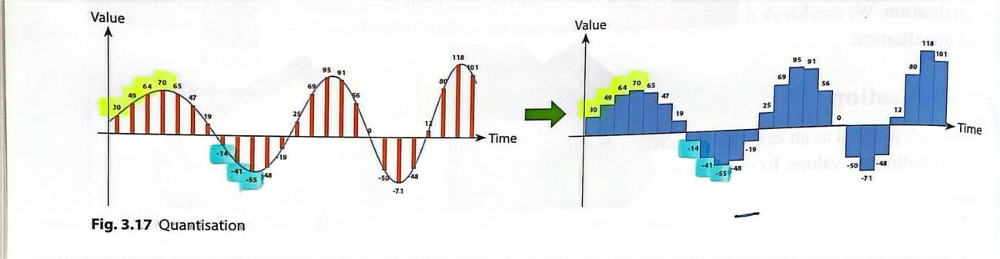
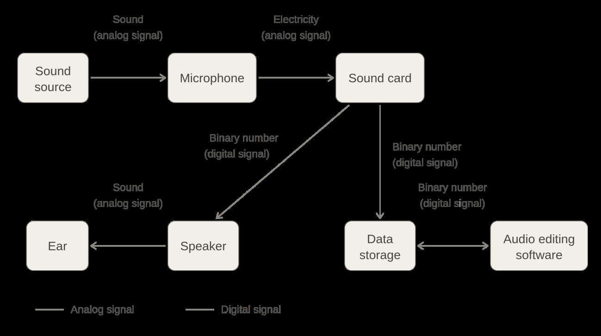
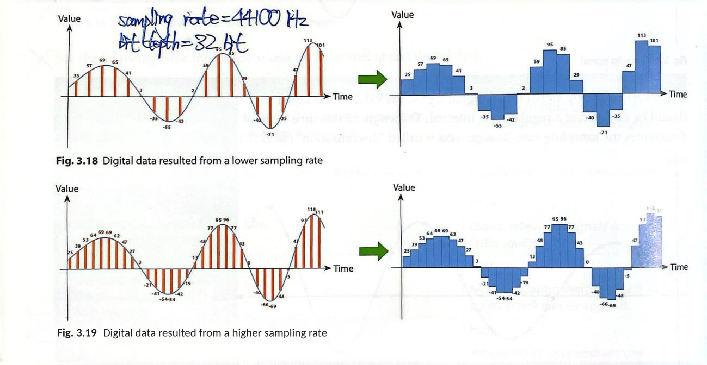
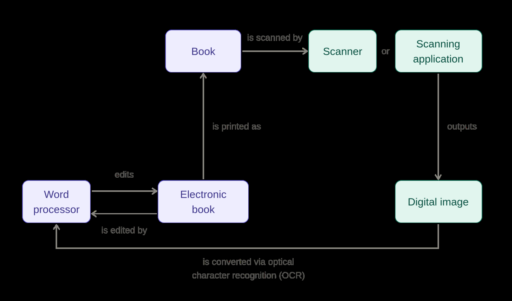

Analog vs digital data, sampling, quantisation and file size.
Analog vs Digital Data
Two ways to represent data
There are different ways to represent a piece of data:
Analog data (模擬資料) is represented in a physical way with continuous values, such as sound waves, written text and drawings.
Digital data (數碼資料) is represented in discrete symbols (like "0" and "1"), such as text documents, digital photos and audio files. It is usually stored and used in devices like computers and smartphones.
Analog data storage examples: photographic films, cassette tape
Digital data storage examples: memory cards in digital cameras, optical discs
MP3: compressed audio
WAV: raw audio
Digitalisation
Two parts: discretisation and quantisation
Digitalisation is the conversion of analog data to digital data. We can break down digitalisation into two parts: discretisation and quantisation.
Discretisation
Take analog signal as an example. An analog signal can take on uncountable set of continuous values. Its quantity varies from time to time.
To convert an analog signal into a digital signal, the value of the signal should be sampled at a regular time interval. The length of this time interval determines the sampling rate. This process is called discretisation.
Quantisation
After discretisation, sampled values are rounded to a fixed set of discrete values, such as integers.

Fig. 3.17 Quantisation — sampled values are rounded to a fixed set of discrete values.
The analog signal is stored as a sequence of integers. This sequence is digital data, which is usually represented by binary numbers in digital storage. This process is called quantisation.
A higher sampling rate means more samples are taken in a given period of time. The resulting data is thus closer to the original waveform and has less data loss during digitalisation.
Digitalisation of Sounds and Videos
From sound source to storage
Sound waves are analog data that can be converted into digital data through the following process:

Sound source → Microphone → Sound card → Data storage (binary). Sound card also drives Speaker → Ear on playback; Audio editing software reads/writes Data storage. Solid arrows = analog signal; dashed arrows = digital signal.
Comparing sampling rates

Fig. 3.18 (top) Digital data resulted from a lower sampling rate; Fig. 3.19 (bottom) Digital data resulted from a higher sampling rate. Sampling rate = 44100 Hz, Bit depth = 16 bit.
Digitalisation of Text and Images
From book to electronic book
Converting physical books to electronic books is usually a digitalisation of text and images.

Book is scanned by Scanner or Scanning application, outputs a Digital image; converted via optical character recognition (OCR) into an Electronic book; edited by a Word processor; printed as Book.
File Size Calculation
Audio file size formula
File size (bits) = Channels × Duration (s) × Sample rate (Hz) × Bit depth (bits)
Worked example
Property
Value
File size
615 KB
Duration
3.6 s
Sample rate
44100 Hz
Bit depth
16 bit
Channels
2
2 × 3.6 × 44100 × 16 = 5080320 bit = 620 KB
Multimedia (text, image, video, audio)
Overview
Multimedia combines text, image, video and audio. See the Multimedia page for file formats and compression.